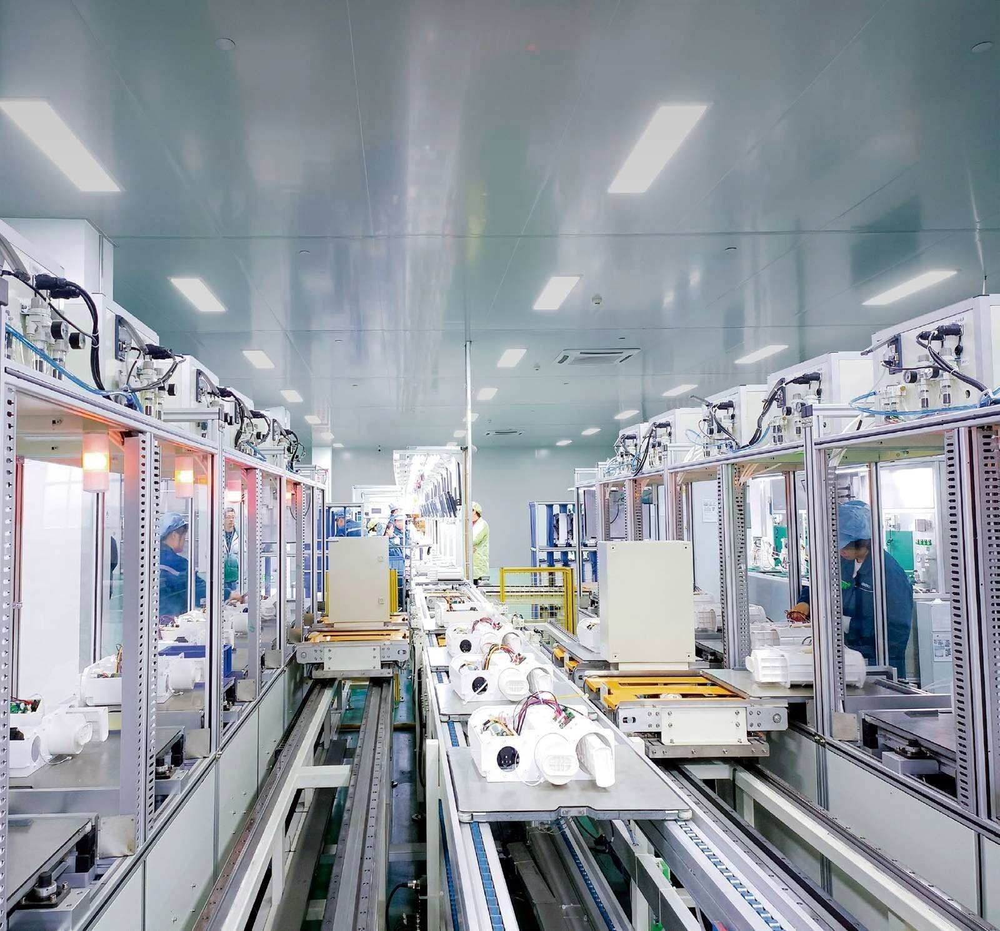

Home / Insights / Water purifier OEM MOQ explained
Insights / Buying guide
Water purifier OEM MOQ explained: what 200 units really means

MOQ is the first number every brand owner asks about — and the most misunderstood. This guide explains what our 200-unit minimum order means in practice, how samples work, and what happens between your first enquiry and the day the goods ship.
What MOQ actually means
MOQ stands for minimum order quantity: the smallest quantity a factory will run for one model with your branding. One production run is set up per model — one round of tooling checks, one branding setup for the logo, colour and packaging, and one quality-control pass. That is why the number is counted per model, not per order total.
An order of 200 units of one model meets the MOQ. An order of 100 units of two different models does not, because each model needs its own 200-unit run. If you want two models in your first order, plan for 200 units of each.
Our MOQ: 200 units per model on the first order
Our first-order MOQ is 200 units per model. Repeat orders are 500 units per model. Models cannot be mixed to reach the number.
For custom runs, many factories quote 500 units — so 200 is set deliberately low. The point is to let a new brand test a market without a container-sized commitment. You still get the full private-label treatment at 200 units: your logo on the machine, your packaging, your manual language, and voltage and plug set for your market.
What 200 units does not include is a new mould. A new mould is a separate development project with its own cost and timeline. If you want a shape that does not exist yet, that is an ODM discussion, not a 200-unit OEM order — see our OEM / ODM process.
Samples come first — and the sample fee comes back
Order a sample before the bulk order. Samples are charged at wholesale price and take 15 days. The sample fee is refunded when your first bulk order is placed, so the sample costs you nothing if you go ahead.
Use the sample the way it is meant to be used. Check the build quality and the finish. Check the screen and menu language. Check the faucet and the fittings. Run it on your local water. The approved sample is the reference for bulk production — the bulk order is built to match the sample you approved, so this is the step where changes are cheap and later changes are not.
What happens after you approve the sample
Bulk production takes 40 days after sample approval. Payment terms are 30% deposit, with the balance paid before shipment. Prices are quoted FOB Shenzhen; freight is confirmed separately for each order.
Three things can move the timeline, and all three are settled before production starts, not during it: approval of custom colour and packaging artwork, market-specific certification, and the voltage and plug setup for your target country. If your artwork is ready and your market is one we have already confirmed, the 40 days hold. If certification work is needed for a new market, that is scoped and confirmed with the order — see our guide to water purifier certification for Europe.
Replacement filters have their own MOQ
Filters are a separate line from machines, with their own MOQ: 500 pieces per filter type. As a rough guide, pre-filters last 6–12 months and RO membranes last 12–24 months, depending on water quality and how much water the household uses — so the installed base starts needing replacements inside the first year.
That is why most distributors order filters together with the first bulk order. A customer who cannot buy a replacement filter from you will buy it from someone else, and the repeat sale is where a water purifier brand earns its margin over time.
What to send for a firm quote
A firm quote needs five things: the model (the RP number on our product page), the quantity, the target market and country, your branding needs (logo, colour, packaging, manual language), and any certification your market requires. With those five, the quote is firm. Without the market and the quantity, any number is a guess.
Start with a model that already fits your market. A high-capacity under-sink RO such as RP-U03 suits households that need 1000–1600 GPD; a countertop RO with ice, hot and cold water such as RP-C09 suits buyers who want no installation; and the sparkling-water series RP-C14 suits brands that want one machine to cover sparkling, cold and hot water. Tell us the model and the market in the Get a Quote form and we will confirm the rest.
FAQ
Can I mix models to reach 200 units?
No. MOQ is 200 units per model. Two models means 200 units of each.
Can I order fewer than 200 units to test the market?
The first order is 200 units per model, and that is the floor. The low-risk way to test is the sample: check the machine first, then place the 200-unit first order.
Is the sample fee refundable?
Yes. The sample fee is refunded when your first bulk order is placed.
How long until the goods ship?
40 days after sample approval, with a 30% deposit and the balance paid before shipment.
Do replacement filters have a separate MOQ?
Yes — 500 pieces per filter type. Order them with the first bulk order so your customers can buy replacements from you.
RP-U03 · RP-C09 · RP-C14 · Get a Quote →